Overview
-
프로젝트 소개
클라이언트의 요구를 바탕으로, 신재생에너지 발전 설비의 상태 모니터링과 운영 관리를 통합 지원하는 플랫폼을 구축한 프로젝트입니다. 운영자와 지자체 등 다양한 사용자가 동일한 시스템 내에서 설비 정보를 조회하고 관리할 수 있도록, 실시간 상태 확인부터 설비 탐색, 장애 대응, 설비 관리까지의 기능을 하나의 흐름으로 통합하였습니다.
-
참여인원
UI/UX 디자이너 겸 퍼블리셔 1명(본인)
개발자 2명 -
역할
기획, UI/UX 디자인, 퍼블리싱(HTML, CSS) 전담
-
기간
2024년 12월 ~ 2025년 2월(약 11주) : 디자인 및 퍼블리싱 병행
-
사용 툴(tool)
Figma, Adobe Photoshop, Illustrator
PROJECT BACKGROUND
클라이언트는 발전 설비 및 중계기를 통합 관리하고, 실시간 상태 모니터링과 운영 제어가 가능한 반응형 플랫폼 구축을 요구하였습니다.
해당 시스템은 엔드 유저용 모바일 앱과 연동되어 고장 접수부터 유지보수 예약까지 이어지는 운영 프로세스를 포함하며, 지자체 또한 설비 상태를 조회할 수 있는 사용자로 참여하는 다중 사용자 구조를 전제로 합니다. 또한 유지보수 과정에서 발생하는 문의 및 AS 요청을 관리하기 위해, 문의 단위를 기준으로 이력을 누적 관리할 수 있는 구조가 필요하였으며, 이에 따라 티켓 기반 문의 관리 방식으로 정리되었습니다.
기존 경쟁사 서비스는 설비 상태 정보가 분산되어 있어 전체 현황을 한눈에 파악하기 어려웠으며, 장애 발생 이후 대응까지의 흐름이 단절되어 실제 운영 과정에서의 작업 연결성이 떨어지는 한계를 보였습니다. 이러한 문제를 개선하기 위해 상태 인지와 작업 흐름을 함께 지원할 수 있는 구조를 중심으로 요구사항이 정의되었습니다.
Requirement Analysis
-
클라이언트 요구사항
- 경쟁사 수준의 기능 구성을 기반으로 기본 서비스 구조 확보
- 유지보수 현황을 대시보드 내 핵심 지표로 구성하고 상위 레벨에서 우선 노출
- 설비 조회 시 위치 정보를 확인할 수 있는 지도 기반 UI 제공
- 유지보수 및 문의 대응을 위한 티켓 기반 관리 기능 필요
- 현장 환경 대응을 위한 반응형 UI 설계
-
내부 요구사항
- 디자인·퍼블리싱·개발이 병행되며, 클라이언트와의 협의를 통해 기능 및 항목이 반복적으로 수정되는 환경을 고려한 항목 추가·수정·삭제가 용이한 범용 UI 구조 필요
- 센서 및 기능 확장 대응을 위한 유연한 정보 구조 및 확장 가능한 UI 설계 필요
- 다수 클라이언트 적용을 고려한 최소 커스터마이징 기반 재사용 가능한 디자인 체계 구축 필요
PROJECT GOALS
-
UX / Product Goals
- 유지보수 현황을 중심으로 한 핵심 정보 우선순위 재정립 및 인지 효율 향상
- 설비 상태 및 이상 여부의 즉각적 식별을 위한 가시성 강화
- 지도 기반 설비 위치 정보 제공을 통한 공간적 맥락 이해 및 탐색 용이성 확보
- 다양한 디바이스 환경에서의 일관된 사용 경험 제공을 위한 반응형 UX 최적화
-
System / Business Goals
- 기능 정의가 지속적으로 변경되는 협업 환경을 고려하여 항목 단위 수정 및 확장이 가능한 구조 필요
- 항목 및 기능 추가에 대응할 수 있는 유연하며 확장 가능한 UI 설계
- 다수 클라이언트 적용을 위한 최소 커스터마이징 기반의 재사용 가능한 UI 체계 구축
Rapid Research & Benchmarking
제한된 일정과 병행 개발 환경을 고려하여, 에너지 설비 모니터링 및 관제 시스템을 중심으로 구조와 화면 구성을 빠르게 분석하였습니다.
-
서비스 A (공공 에너지 모니터링 시스템)
- 대시보드 화면이 발전량 및 설비 용량 등 총량 지표 중심으로 구성됨
- 설비 이상 여부는 하위 영역에 위치하여 추가 스크롤 이후 확인 가능
- 상단 영역만으로는 설비 상태를 판단하기 어려운 구조
서비스 A 대시보드 UI 구조 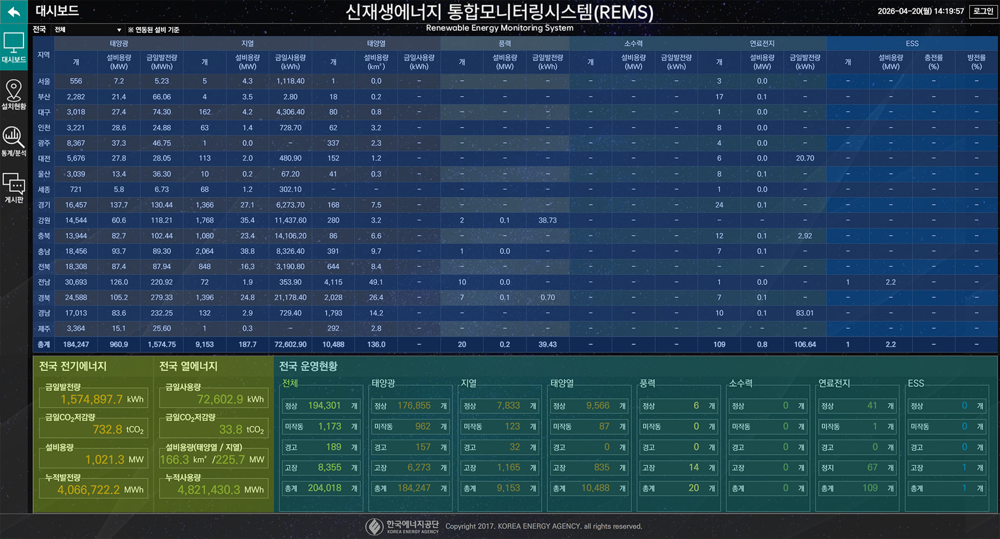
- 총량 지표 (지역·에너지원별)
- 총량 지표 (전국 단위)
- 설비 상태 정보
-
서비스 B (내부 레퍼런스)
- 지도 기반 설비 위치를 마커로 표시
- 줌 레벨에 따라 인접 설비를 클러스터링하여 수량 중심으로 집계
- 설비 상태를 발전율 기준의 다단계 값으로 표현
-
공통 관찰
- 모바일 환경 대응이 제한적이며 반응형 UI가 적용되지 않음
- 데이터 중심 UI 구조이나, 상태 판단을 위한 정보 배치 기준은 명확하지 않음
KEY UX ISSUES
- 설비 상태 정보가 상위 화면에서 직접적으로 노출되지 않는 구조
- 데이터 나열 중심의 대시보드로 인해 정보 간 중요도 구분 기준이 부재
- 지도 UI가 위치 표시 기능에 집중되어 상태 정보와 분리된 구조
- 설비 상태 표현이 수치 중심으로 구성되어 즉각적인 이상 여부 판단이 어려운 문제
- 문의 대응 방식이 실시간 채팅 또는 단건 응답 중심으로 구성될 경우, 이력 기반 상태 추적이 어려운 구조
- 디바이스 환경 변화에 대응하지 않는 고정 레이아웃 구조
DESIGN PROCESS
-
7-1. 정보 구조 설계
서비스 기능을 사용 목적 기준으로 구분하여 구조를 정의하였습니다. 실시간 상태 확인, 설비 탐색, 데이터 분석, 운영 지원, 시스템 관리로 기능을 분리하고, 각 영역 내에서 관련 기능이 확장될 수 있도록 하위 구조를 구성하였습니다. 또한 설비 상세 정보는 별도 페이지가 아닌 모니터링 내에서 접근 가능한 구조로 설계하여, 탐색 흐름이 분절되지 않도록 구성하였습니다. 이를 통해 기능 간 이동 없이 목적 기반 탐색이 가능한 정보 구조를 구축하였습니다.
사이트맵 다이어그램 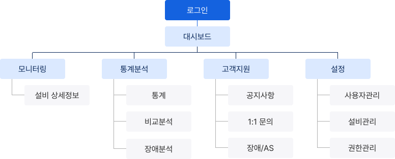
-
7-2. 대시보드 정보 구조 설계
대시보드에서 설비 상태를 즉시 판단할 수 있도록, 상태 중심으로 정보 위계를 재정의하였습니다. 상태 판단에 직접적으로 필요한 정보를 최상위에 배치하고, 그 외 데이터는 상태 해석을 보조하는 구조로 재구성하였습니다. 또한 클라이언트 운영 범위에 맞지 않는 총량 및 지역 단위 정보는 제외하고, 실제 운영 판단에 필요한 데이터만 선별하여 정보 구성을 단순화하였습니다.
대시보드 정보 구조 다이어그램 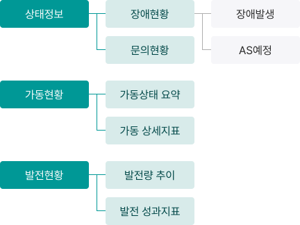
-
7-3. 지도 기반 상태 인지 구조 설계
지도에서 설비 위치와 상태를 동시에 인지할 수 있도록, 상태 표현과 탐색 방식을 단순화하여 구조를 정의하였습니다. 설비 상태는 별도의 해석 없이 구분 가능하도록 상태값 기준으로 단순화하고, 이를 마커 색상으로 일관되게 표현하여 지도 상에서도 동일한 기준으로 인지할 수 있도록 구성하였습니다. 또한 다수 설비가 분포된 환경에서 탐색이 가능하도록, 줌 레벨에 따라 설비를 그룹 단위로 통합하는 클러스터링 구조를 적용하고, 개별 설비와 집계 상태를 함께 확인할 수 있도록 설계하였습니다.
마커 상태 구분 지도 축척 확대 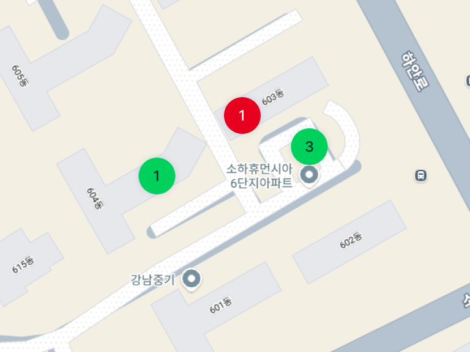
지도 축척 축소 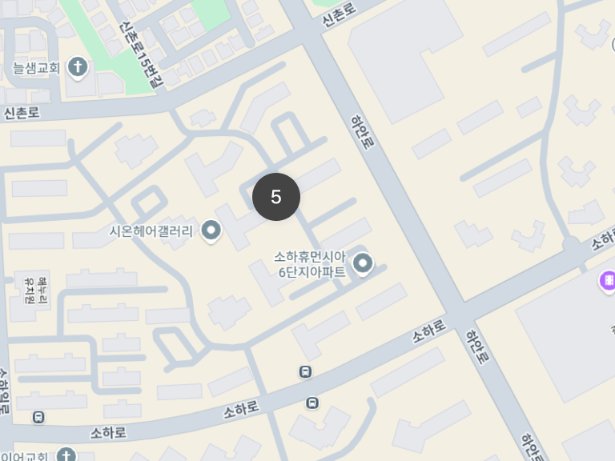
-
7-4. 장애/AS 상태 기반 정보 구조 설계
장애 및 유지보수 정보를 고정된 항목이 아닌, 진행 상태에 따라 필요한 정보가 달라지는 구조로 정의하였습니다. 상태값을 기준으로 각 단계에서 필요한 정보만 노출되도록 구성하고, 동일한 인터페이스 내에서 상태 변화에 따라 정보가 갱신되도록 설계하였습니다.
상태별 정보 구성 변화 다이어그램 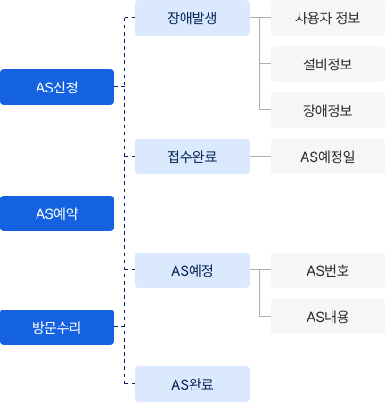
- 상태 변경 트리거
- 상태 정보
- 상태별 관리정보
-
7-5. 디자인 시스템 및 확장 구조 설계
기능 확장과 다수 환경 대응을 위해, 일관된 기준으로 관리되는 디자인 시스템을 정의하였습니다. UI는 반복 사용을 전제로 컴포넌트 단위로 구조화하고, 동일한 유형의 정보가 동일한 방식으로 표현되도록 규칙을 설정하였습니다. 또한 디바이스 환경에 따라 정보 밀도와 레이아웃이 조정되도록 반응형 기준을 함께 정의하여, 화면 크기에 관계없이 동일한 구조를 유지할 수 있도록 설계하였습니다.
Typography - Typeface : “Pretendard”
- Headline (Semi Bold) - 28 px
- Title (Medium) - 20 px
- Label (Medium) - 16 / 14 / 12 px
- Body (Regular) - 16 / 14 / 12 px
Color Roles -
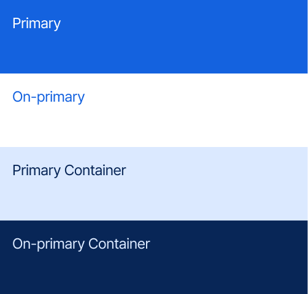
-
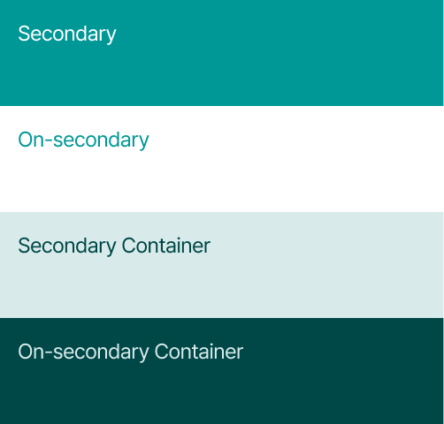
-
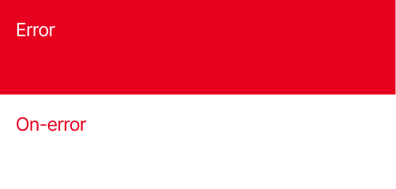
-
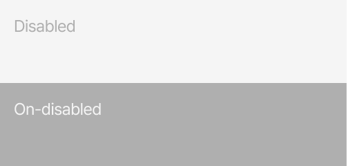
-
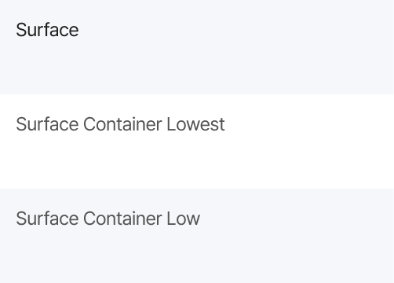
-
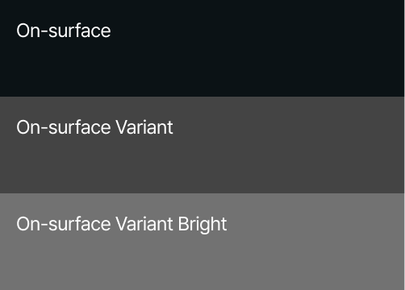
-
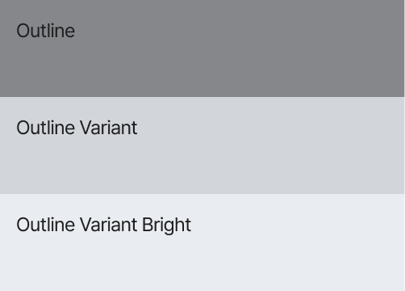
Buttons 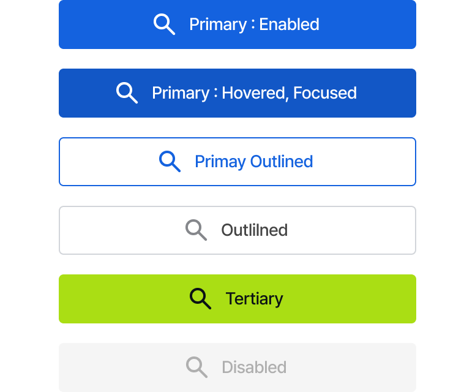
Inputs 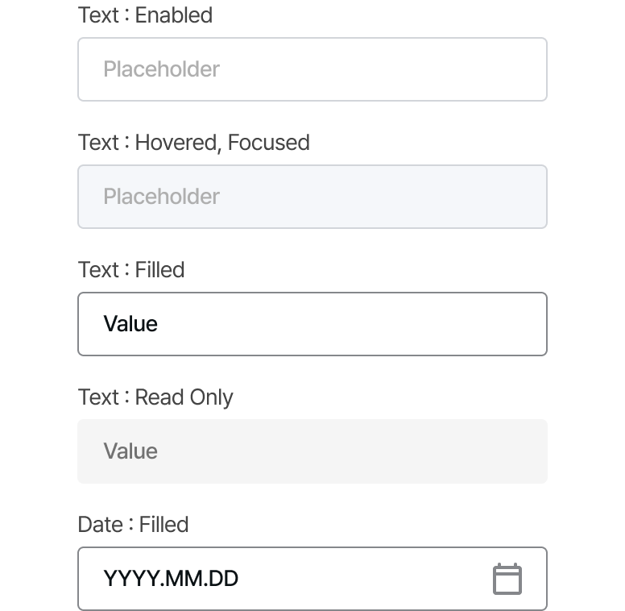
Design Iteration
Design Process를 기반으로 화면 구조와 와이어프레임을 구성한 뒤, 클라이언트 피드백을 통해 실제 사용 맥락과의 차이를 확인하였습니다. 이후 피드백을 반영하여 정보 우선순위와 레이아웃 구조를 재조정하고, 사용자 행동 흐름에 맞게 화면 구성을 개선하였습니다.
모니터링 레이아웃
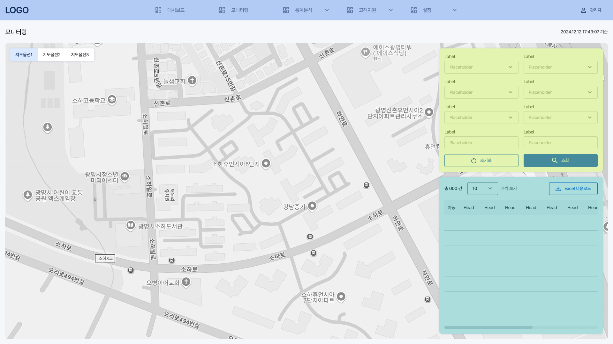
- 네비게이션
- 검색 영역
- 검색 결과 리스트
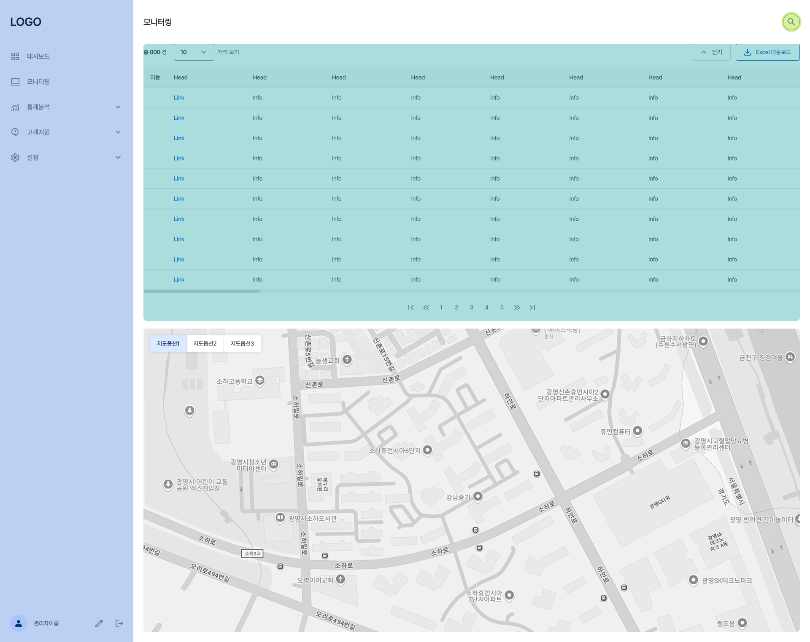
- 네비게이션
- 검색 버튼
- 검색 결과 리스트
- 네비게이션 구조 변경 : 상단 가로형 네비게이션은 메뉴 확장 시 공간 제약이 발생하고, 선택 시 오버레이가 화면을 가리는 문제가 확인되었습니다. 이를 개선하기 위해 네비게이션을 좌측 세로 구조로 재배치하여, 메뉴 확장에 유연하게 대응하고 화면 가림 없이 탐색이 가능하도록 구조를 변경하였습니다.
- 검색 결과 중심 구조 변경 : 초기에는 지도 기반 탐색을 중심으로 검색 영역과 결과 리스트를 오버레이 구조로 배치하였으나, 실제 사용 시에는 지도보다 검색 결과를 우선적으로 확인한 후 상세 정보로 접근하는 패턴이 확인되었습니다. 이에 따라 레이아웃을 상하 구조로 재구성하고, 상단에 검색 결과를 배치하여 정보 확인과 접근이 우선적으로 이루어지도록 변경하였습니다.
- 검색 UI 노출 방식 개선 : 검색 UI가 상시 노출될 필요가 없다는 피드백을 반영하여, 검색 버튼을 통해 필요한 시점에만 노출되는 구조로 변경하였습니다. 이를 통해 화면 내 불필요한 점유 영역을 줄이고, 검색 결과를 더 넓은 영역에서 확인할 수 있도록 개선하였습니다.
FINAL DESIGN
* 본 화면은 실제 서비스 기반으로 구성되었으며, 데이터가 포함되는 일부 영역(입력 UI, 테이블 등)의 텍스트는 비식별화되어 label, info 등의 형태로 대체되었습니다.
* 이미지는 사용자의 가로 해상도에 대응하여 최적화된 레이아웃으로 표시됩니다. 화면 크기를 조절하면 다른 해상도 기준의 UI도 확인할 수 있습니다.
-
대시보드
대시보드는 별도의 조작 없이 지속적으로 상태를 확인하는 사용 환경을 고려하여, 한 화면 내에서 전체 정보를 파악할 수 있도록 집약적으로 구성하였습니다. 최상단에는 장애 접수 및 문의 현황을 배치하고, 즉시 대응이 가능한 접근 경로를 함께 제공하여 운영자의 빠른 상황 인지와 후속 조치를 지원합니다. 또한 설비 가동 현황과 발전 현황은 시각화 요소로 구성하여, 복잡한 데이터 해석 없이도 현재 상태와 변화 흐름을 직관적으로 파악할 수 있도록 설계하였습니다.
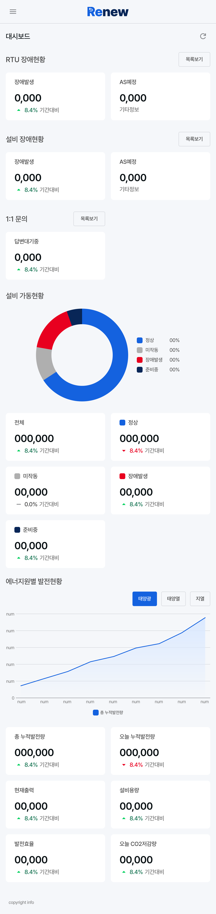
-
모니터링
모니터링 화면은 설비 상태 확인과 위치 기반 파악이 동시에 이루어지도록, 검색 결과와 지도 정보를 결합한 구조로 설계하였습니다. 데스크탑 환경에서는 지도 확인 시 발생하는 반복적인 스크롤을 줄이기 위해, 검색 결과 영역에 열기/닫기 기능을 적용하여 화면 전환 없이 지도에 즉시 접근할 수 있도록 구성하였습니다.
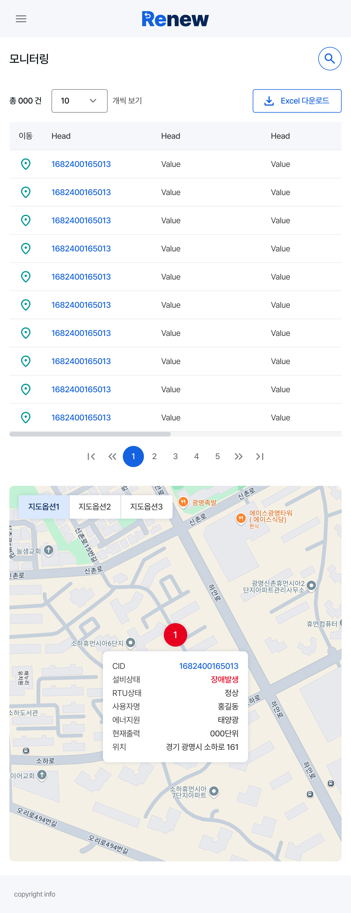
모니터링 상세정보 Modal 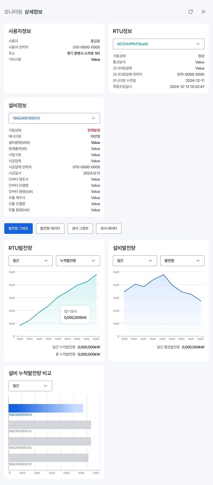
상세정보 화면은 연관된 데이터를 한 번에 파악할 수 있도록 정보 영역을 카드 단위로 구조화하였습니다. 상단에는 사용자 및 설비 정보를 배치하여 핵심 정보를 우선적으로 인지할 수 있도록 구성하였으며, 하단은 탭 구조를 적용해 목적에 따라 정보를 선택적으로 확인할 수 있도록 설계하였습니다. 그래프 영역에서는 상태 변화를 직관적으로 파악할 수 있도록 시각화를 제공하고, 데이터 영역에서는 필요한 정보를 파일 형태로 활용할 수 있도록 구성하였습니다.
-
고객지원 - 장애/AS
장애/AS 상세 Modal 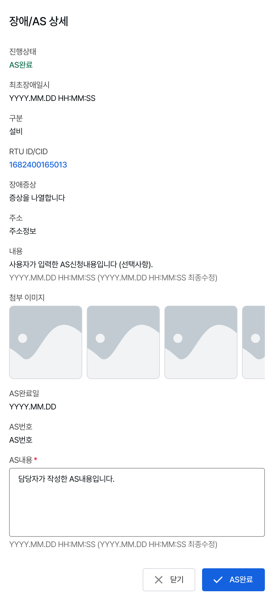
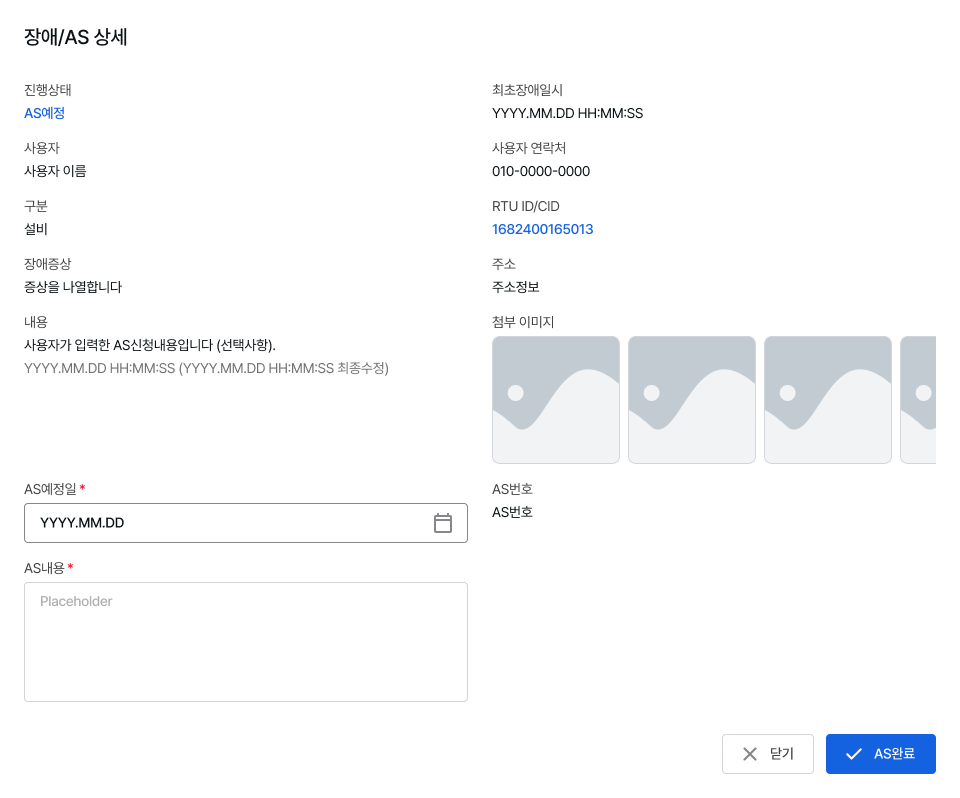
장애/AS 상세 화면은 장애 발생부터 처리 완료까지의 과정을 상태값 기준으로 관리할 수 있도록 설계하였습니다. 초기 접수 정보는 상태가 변경되어도 유지되며, 진행 단계에 따라 일정 등록, 상태 변경, 작업 내용 입력 등 필요한 기능이 순차적으로 활성화됩니다. 예를 들어 접수 단계에서는 관리자가 즉시 AS 일정을 등록할 수 있으며, 일정 확정 이후에는 고유 번호와 함께 작업 기록이 추가되는 구조로 구성하여, 하나의 화면 내에서 접수부터 완료까지의 관리 흐름이 이어지도록 설계하였습니다.
-
설정 - 설비관리
설비관리 화면은 설비 정보 조회와 등록이 함께 이루어질 수 있도록 구성하였습니다. 신규 설비는 개별 입력을 통한 등록과 파일 업로드 기반의 일괄 등록 방식을 함께 제공하여, 상황에 따라 효율적인 등록 방식 선택이 가능하도록 설계하였습니다. 이를 통해 소량 수정부터 대량 등록까지 하나의 흐름 내에서 처리할 수 있는 관리 환경을 제공합니다.
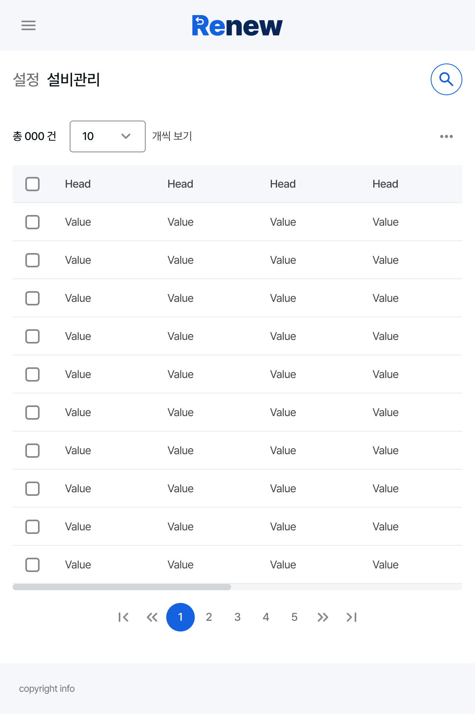
Delivery & Reflection
기획, 디자인, 퍼블리싱을 포함한 전체 구현 과정을 거쳐 실제 운영이 가능한 형태의 서비스로 완성 및 전달되었습니다. 제한된 기간 내에서 핵심 기능과 정보 구조를 우선 정리하고, 이후 확장을 고려한 형태로 설계를 마무리하였습니다.
운영자의 실제 사용 흐름을 기준으로 정보 구조와 인터페이스를 재정의하는 데 중점을 두었습니다. 상태 인지, 설비 탐색, 장애 대응, 설비 관리로 이어지는 구조를 통해 단순 조회를 넘어 실제 업무가 이어질 수 있는 흐름을 설계하였습니다.
또한 상태 변화에 따라 필요한 정보와 기능이 달라지는 구조를 설계하며, 개별 화면이 아닌 실제 업무 흐름을 기준으로 UX를 설계하는 접근의 중요성을 확인할 수 있었습니다. 이를 통해 확장 가능한 구조를 초기 설계 단계에서 정의하는 것이 전체 시스템 완성도에 중요한 영향을 미친다는 점을 경험하였습니다.